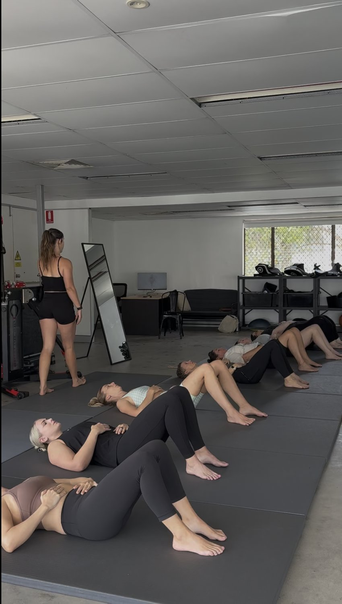

Movement-based strength training is a method of building strength by improving how the body moves as a system, rather than focusing on isolated muscles or generic workout plans.
Many people searching for strength training programs, resistance training, strength exercise programs, or workout plans for strength aren’t actually failing at strength. They’re following systems that don’t address posture, coordination, or movement quality.
This article explains what movement-based strength training is, how it compares to traditional strength programs, and who it’s best suited for.
What Is Movement-Based Strength Training?

Movement-based strength training focuses on:
-
How force moves through the body
-
How joints coordinate under load
-
How posture affects strength output
-
How stability supports long-term strength gains
Instead of following a fixed strength program or split routine, training is organised around movement patterns such as hinging, rotating, stepping, and stabilising.
Direct answer:
Movement-based strength training builds strength by improving coordination, alignment, and control first, then layering resistance on top.
Movement-Based Training vs Traditional Strength Programs
AspectTraditional Strength ProgramsMovement-Based Strength Training Primary focusMuscles & exercisesMovement patterns & coordinationStructureFixed plans (splits, routines)Progressive movement-based sequencingProgressionLoad, reps, volumeControl, stability, then resistanceCore trainingIsolated or bracing-basedIntegrated through whole-body movementTransfer to daily lifeOften limitedHigh transfer to real-world movement
Traditional strength programs can increase muscle strength, but without addressing how the body organises movement, those gains may not reduce pain or improve everyday function.
Why Many Strength Programs Stop Working
People often search for:
-
Strength workout programs
-
Strength building training programs
-
Novice strength programs
-
Resistance training plans
because they feel stuck or overwhelmed.
Common issues include:
-
Feeling strong in workouts but unstable day to day
-
Persistent joint or back discomfort
-
Difficulty sticking to complex plans
-
Confusion about what exercises actually help
This usually isn’t a motivation problem. It’s a movement problem.
Where Resistance Training Fits In
Resistance training is still an important tool in movement-based strength training, but it’s used differently.
Instead of chasing fatigue, resistance is applied to:
-
Reinforce proper movement patterns
-
Build strength through controlled ranges
-
Improve coordination under load
Tools like resistance bands, dumbbells, and kettlebells allow strength to be developed without compromising movement quality.
Who Movement-Based Strength Training Is Best For
Movement-based strength training is especially helpful for people who:
-
Are new to strength training
-
Are returning after time off, injury, or pregnancy
-
Feel uncoordinated or unstable during workouts
-
Want strength without high-impact training
-
Have tried multiple strength programs without lasting improvement
Rather than asking “What workout plan should I follow?”, the focus becomes:
“How should my body move when I produce force?”

Bells & Bands: Movement-Based Strength in a Structured Group Setting
Bells & Bands is a women-focused group class built around movement-based strength principles.
The class uses:
-
Resistance bands
-
Dumbbells and kettlebells
-
Progressive, low-impact loading
-
Clear coaching and movement feedback
Instead of following a generic strength training program, participants learn how to:
-
Build strength through better movement
-
Improve posture and stability
-
Reduce unnecessary joint stress
-
Gain confidence in how their body works
This makes Bells & Bands suitable for beginners, women returning to training, and anyone looking for a sustainable approach to strength.
👉 Learn more about the Bells & Bands class here:
https://aardvark-cranberry-jx2g.squarespace.com/womens-bells-bands-class